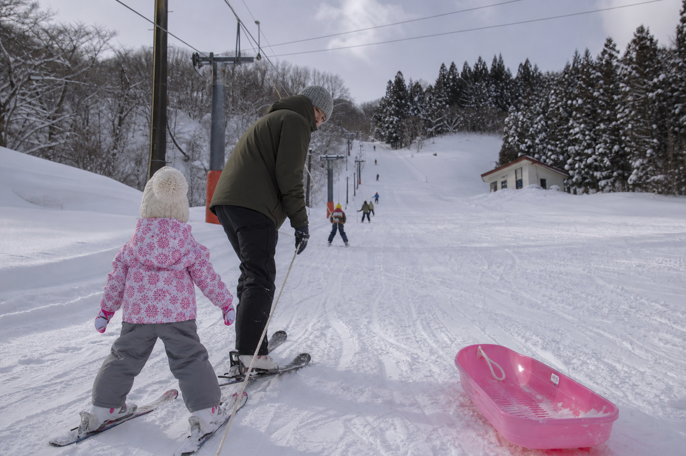
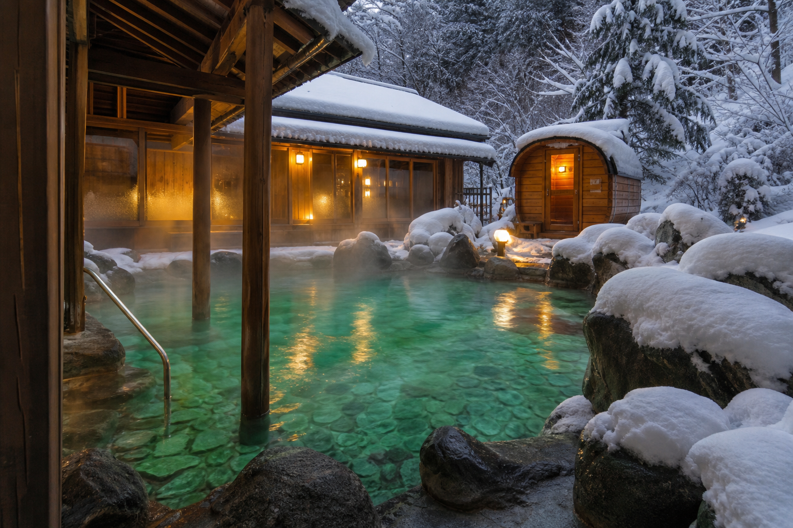

貸切感 × 圧倒的コスパ
近隣の大型ゲレンデと比べ設備は小規模だが、「人目を気にせず大ボーゲンで転んでも恥ずかしくない」プライベート空間と低価格が最大の武器——初心者・家族のスノーデビューに最適なローカルゲレンデ。
コース・雪遊びを見る山形県大江町 · 西村山
貸切状態のプライベートゲレンデで、初めての雪遊びと極上温泉を満喫する山形ローカル旅。
ロープトーのみ 貸切感・コスパ 温泉まで約5分更新 1/15 9:00
ロープトー
運行中
リフトなし · ロープトー中心
斜面
緩斜面中心
最大22° · 短距離滑走
混雑
貸切に近い
平日は人目を気にせず雪遊び
周辺
テルメ柏陵
車で約5分 · 舟唄温泉
小鳥山の魅力
近隣の大型ゲレンデと比べ設備は小規模だが、「人目を気にせず大ボーゲンで転んでも恥ずかしくない」プライベート空間と低価格が最大の武器——初心者・家族のスノーデビューに最適なローカルゲレンデ。
コース・雪遊びを見るチェアリフトがなくロープトー中心——急斜面の恐怖が少なく、子どもにスキーを教える「最初の1本」として口コミで高評価。衝突リスクの低さがファミリー層の安心材料。
ファミリー・初雪案内Local Value
滑走距離は短く中級者以上の満足度は限定的だが、日券の低価格と混雑のなさで「初めての雪遊び」「ソリだけの日」に最適——近隣大型店と差別化する価格帯。
日券
日券（低価格帯）
セット
温泉×雪遊びセット

Hands-free Snow
大江町内に本格的スキー用品店が少ない——寒河江・天童・山形の大型スポーツ店や宿泊施設と連携し、用具・ウェアの事前レンタル・現地配達を整備する構想。
旅行者が「手ぶらで雪遊び」できる環境で、エリア全体のレンタル在庫を最適化。
手ぶら案内Snow · Onsen
スキー場から約3km・車5分のテルメ柏陵健康温泉館——溶存成分量が高く、日によってエメラルドグリーンや乳白色など6色に変わる舟唄温泉。サウナ完備、レストラン川かぜで山形牛・地鶏も。
道の駅おおえコラマガセ（2024リニューアル）と隣接——週替わりランチとセットの回遊向け。
温泉・回遊ルート
Snow Debut
緩やかな傾斜で初心者に最適——「子供と遊ぶには丁度いい」「最初にスキーを教える場所として最高」との声。ロープトーは腕力が要るため、小さな子はソリゾーン中心の設計が安心。
Snow & Spa Day
小鳥山単体では滞在が短くなりがち——テルメ柏陵・道の駅・左沢楯山城史跡公園と組み合わせ、大江町内で一日を完結する回遊モデル。
SNOW · FOOD · SPA01
午前：小鳥山
貸切感のロープトー斜面でスノーデビュー・ソリ
02
昼：道の駅 or 蕎麦
おおえコラマガセの週替わりランチ、または蕎麦cafe閑や
03
午後：楯山城史跡
最上川と蔵王の雪景色——日本一公園で記念撮影
04
夕方：テルメ柏陵
高濃度温泉とサウナで冷えを癒す
05
夜：レストラン川かぜ
山形牛・地鶏の夕食で大江町消費を完結
Access
JR新庄駅から車で約40分 · テルメ柏陵まで約5分 · 冬季迂回ルート要確認
TEL 大江町観光協会 0237-62-2111 · 施設情報は公式・観光協会サイト参照